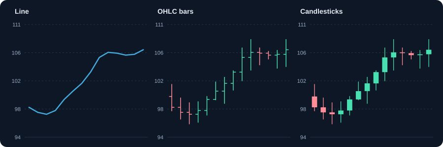
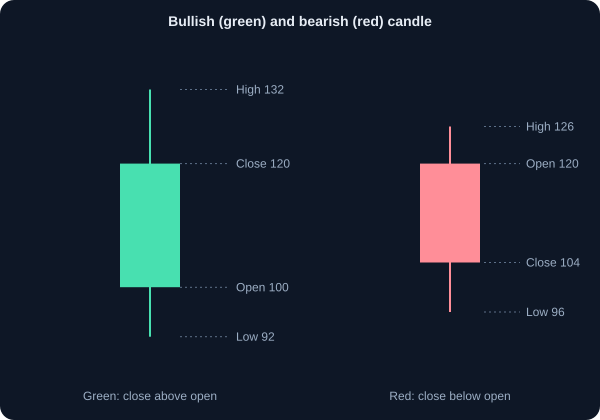
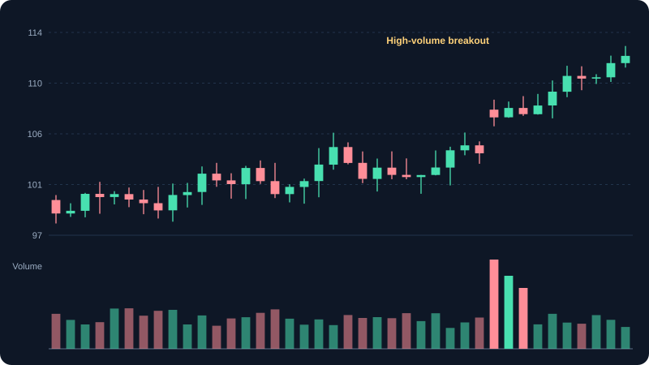

चार्ट कैसे पढ़ें
लाइन, बार और कैंडलस्टिक चार्ट, OHLC डेटा और वॉल्यूम समझें।
1. चार्ट क्या है
प्राइस चार्ट बताता है कि समय के साथ किसी एसेट की कीमत कैसे बदली। चार्ट में हर बिंदु या बार एक अवधि का सार है: एक मिनट, एक दिन या एक हफ़्ता। चार्ट भविष्य नहीं दिखाते; वे दिखाते हैं जो हो चुका है, जिससे ट्रेंड, जोखिम और समय पर फ़ैसलों में मदद मिलती है।
2. चार्ट के प्रकार
- लाइन चार्ट: क्लोज़िंग कीमतों को जोड़ता है। सबसे सरल दृश्य; समग्र ट्रेंड देखने के लिए अच्छा।
- बार (OHLC) चार्ट: हर बार में ओपन, हाई, लो और क्लोज़। बाईं टिक ओपन, दाईं टिक क्लोज़, और बार हाई से लो तक की रेंज।
- कैंडलस्टिक चार्ट: वही चार मान, बॉडी (ओपन से क्लोज़) और विक (हाई और लो) के रूप में। एक नज़र में पढ़ना सबसे आसान।
- एरिया चार्ट: लाइन के नीचे भरा क्षेत्र। ऐप और वेबसाइट पर आम; लाइन चार्ट जैसा।
3. एक कैंडल कैसे पढ़ें
हर कैंडल में एक बॉडी और अधिकतम दो विक होती हैं। बॉडी ओपन और क्लोज़ के बीच की दूरी दिखाती है। विक दिखाती हैं कि उस अवधि में कीमत बॉडी से कितनी आगे गई।
- हरी (या सफ़ेद) कैंडल: क्लोज़ ओपन से ऊपर। अवधि के अंत में ख़रीदारों का नियंत्रण।
- लाल (या काली) कैंडल: क्लोज़ ओपन से नीचे। अवधि के अंत में विक्रेताओं का नियंत्रण।
- लंबी बॉडी: अवधि में एक दिशा में मज़बूत चाल।
- लंबी विक: कीमत एक तरफ़ गई और वापस धकेली गई। लंबी ऊपरी विक का मतलब ऊँचे भाव पर विक्रेता आए।
उदाहरण: ओपन ₹100, हाई ₹108, लो ₹97, क्लोज़ ₹105। कैंडल हरी है। बॉडी ₹100 से ₹105 (₹5)। ऊपरी विक ₹3 (₹105 से ₹108)। निचली विक ₹3 (₹97 से ₹100)।
4. समय-सीमा: कितना ज़ूम करें
वही शेयर 5-मिनट और साप्ताहिक चार्ट पर बहुत अलग दिखता है। हर समय-सीमा अलग कहानी कहती है। दिशा के लिए ऊँची समय-सीमा और एंट्री का समय तय करने के लिए निचली समय-सीमा देखें।
- इंट्राडे (1 से 15 मिनट): शोर और तेज़ उतार-चढ़ाव। इंट्राडे ट्रेडर उपयोग करते हैं।
- डेली: हर सत्र की एक कैंडल। स्विंग ट्रेडर और शुरुआती के लिए सबसे आम दृश्य।
- साप्ताहिक और मासिक: बड़ा ट्रेंड। निवेशक लंबी दिशा देखने के लिए उपयोग करते हैं।
5. वॉल्यूम: चाल के पीछे की ताकत
वॉल्यूम उस अवधि में ट्रेड हुए शेयरों की संख्या है। यह बताता है कि कीमत की चाल को कितनी भागीदारी का समर्थन है। ज़्यादा वॉल्यूम पर ब्रेकआउट में आमतौर पर कम वॉल्यूम वाली उसी चाल से ज़्यादा समर्थन होता है।
उदाहरण: शेयर ₹250 के ऊपर 20-दिन के औसत वॉल्यूम के 2.5 गुना पर टूटता है। यह औसत वॉल्यूम पर टूटने से मज़बूत सबूत है। वॉल्यूम गारंटी नहीं देता कि चाल जारी रहेगी; वह उसे वज़न देता है।
6. चार्ट पर सपोर्ट और रेज़िस्टेंस
सपोर्ट वह कीमत स्तर है जहाँ ख़रीदारी दिखी है, और रेज़िस्टेंस जहाँ बिकवाली दिखी है। चार्ट पर ये क्षैतिज क्षेत्रों के रूप में दिखते हैं, जहाँ कीमत कई बार उछली है। वॉल्यूम के साथ किसी स्तर का टूटना उसे पलट सकता है: रेज़िस्टेंस सपोर्ट बन सकता है।
7. ट्रेंड: किस दिशा में ट्रेड करें
अपट्रेंड में ऊँचे हाई और ऊँचे लो बनते हैं। डाउनट्रेंड में नीचे हाई और नीचे लो। साइडवे बाज़ार में कोई साफ़ प्रगति नहीं होती। कई शुरुआती साफ़ ट्रेंड के ख़िलाफ़ ट्रेड करके पैसा खोते हैं। पहले ट्रेंड पहचानें, फिर उसी दिशा में एंट्री खोजें।
- अपट्रेंड में लो के बिंदुओं से और डाउनट्रेंड में हाई के बिंदुओं से ट्रेंड लाइन खींचें।
- ट्रेंड कमज़ोर होता है जब ऊँचा लो न बने, या कीमत पिछले लो के नीचे बंद हो।
- साइडवे बाज़ार (रेंज) रेंज-ट्रेडिंग टूल के लिए, और ट्रेंड ट्रेंड-फ़ॉलोइंग टूल के लिए उपयुक्त।
8. चार्ट की सेटिंग जो मायने रखती हैं
- लंबी अवधि के लिए लॉगरिदमिक स्केल उपयोग करें। यह प्रतिशत चाल को ज़्यादा निष्पक्ष दिखाता है।
- स्प्लिट और बोनस के लिए समायोजित कीमतें देखें। वरना पुरानी कीमत गलत ऊँची या नीची दिखती है।
- किसी चाल को शेयर-विशेष या पूरे बाज़ार की समझने के लिए इंडेक्स चार्ट से तुलना करें।
9. चार्ट पढ़ने की आम गलतियाँ
- एक कैंडल से ज़्यादा निष्कर्ष निकालना। क्रम और संदर्भ देखें।
- केवल एक समय-सीमा देखना। ऊँची समय-सीमा भी जाँचें।
- घटना के बाद स्तर खींचना, जिससे हर कीमत अनुमानित लगती है।
- वॉल्यूम और व्यापक बाज़ार को अनदेखा करना।
- चार्ट को निश्चितता मानना। वह जो हुआ वह दिखाता है, आगे की संभावनाएँ नहीं।
10. सब मिलाकर
एक सरल दिनचर्या: ऊँची समय-सीमा से ट्रेंड देखें, मुख्य सपोर्ट और रेज़िस्टेंस चिह्नित करें, पिछली चाल के वॉल्यूम को देखें, फिर ताज़ा कैंडल पढ़कर संकेत देखें। इसके बाद ही स्टॉप-लॉस और पोज़िशन साइज़ के साथ एंट्री पर विचार करें।
चार्ट और चित्र



कार्य उदाहरण
एक कैंडल पढ़ना
ओपन ₹100, हाई ₹108, लो ₹97, क्लोज़ ₹105। क्लोज़ ओपन से ऊपर है, इसलिए कैंडल हरी है। बॉडी ₹100 से ₹105 तक है। ऊपरी विक ₹105 से ₹108 (₹3) है, और निचली विक ₹97 से ₹100 (₹3)।
दिन का प्रतिशत बदलाव
कल का क्लोज़ ₹200 था और आज का ₹206। बदलाव = (206 − 200) ÷ 200 = +3%। चार्ट चाल दिखाता है, पर प्रतिशत उसका आकार बताता है।
वास्तविक परिस्थितियाँ
कीमत बढ़ रही है, पर वॉल्यूम घट रहा है
शेयर तीन दिन चढ़ता है, पर हर दिन वॉल्यूम घटता है। वॉल्यूम के बिना बढ़ती कीमत कमज़ोर होती है और पलटने की संभावना ज़्यादा होती है। कार्रवाई से पहले पुष्टि का इंतज़ार करें।
डेली चार्ट नीचे, वीकली चार्ट ऊपर
साप्ताहिक ट्रेंड ऊपर है, पर डेली चार्ट में थोड़ी गिरावट दिखती है। यह अक्सर बड़े अपट्रेंड के भीतर ठहराव या पुलबैक होता है। एक से ज़्यादा समय-सीमा देखने से बेहतर संदर्भ मिलता है।
उपयोग के मामले
- डेली चार्ट पर ट्रेड लेने से पहले वीकली चार्ट पर ट्रेंड देखना।
- एक ही सेक्टर के दो शेयरों की तुलना करना कि कौन ज़्यादा मज़बूत है।
- नतीजों या ख़बरों के आसपास असामान्य वॉल्यूम पहचानना, जो बड़े खिलाड़ियों की सक्रियता बता सकता है।
मुख्य बातें
- कैंडल अपनी अवधि का ओपन, हाई, लो और क्लोज़ दिखाती है।
- रंग दिशा बताता है; बॉडी ओपन और क्लोज़ के बीच का अंतर; विक चरम स्तर।
- वॉल्यूम कीमत की चाल को वज़न देता है।
- एक चार्ट से गुमराह होने से बचने के लिए एक से ज़्यादा समय-सीमा देखें।
मुख्य शब्द, समझाए गए
- कैंडलस्टिक
- किसी अवधि का ओपन, हाई, लो और क्लोज़ दिखाने वाला चार्ट तत्व, दिशा के अनुसार रंगीन।
- वॉल्यूम
- किसी अवधि में ट्रेड हुए शेयरों की संख्या। ज़्यादा वॉल्यूम का मतलब ज़्यादा भागीदारी।
- ट्रेंड
- कीमत की सामान्य दिशा: ऊपर (ऊँचे हाई और लो), नीचे (नीचे हाई और लो), या साइडवे।
- सपोर्ट
- वह कीमत स्तर जहाँ ख़रीदारी दिखी है और आगे गिरावट रुकी है।
- रेज़िस्टेंस
- वह कीमत स्तर जहाँ बिकवाली दिखी है और आगे बढ़त रुकी है।
सीखने वालों के सामान्य प्रश्न
शुरुआती को कौन सी समय-सीमा उपयोग करनी चाहिए?
डेली चार्ट अच्छी शुरुआत है, क्योंकि हर कैंडल पूरा सत्र दिखाती है और ट्रेंड साफ़ दिखता है। वीकली चार्ट बड़ा ट्रेंड देखने में मदद करता है। बुनियादी बातें समझने तक बहुत छोटी समय-सीमा से बचें।
कुछ कैंडल हरी और कुछ लाल क्यों होती हैं?
हरी (या सफ़ेद) का मतलब है क्लोज़ ओपन से ऊपर। लाल (या काली) का मतलब है क्लोज़ ओपन से नीचे। रंग उस अवधि के भीतर केवल दिशा दिखाता है।
क्या लाइन चार्ट बेकार हैं?
नहीं। लाइन चार्ट क्लोज़िंग कीमतों का सबसे सरल दृश्य है और समग्र ट्रेंड देखने के लिए अच्छा है। कैंडलस्टिक ओपन, हाई और लो जोड़ते हैं, जो ज़्यादा विवरण दिखाते हैं।
केवल शैक्षिक सामग्री, निवेश सलाह नहीं। बाज़ार में जोखिम होता है, जिसमें पूँजी खोने का जोखिम भी शामिल है। उदाहरण सरल किए गए हैं और इनमें शुल्क, टैक्स या स्लिपेज शामिल नहीं हो सकते।